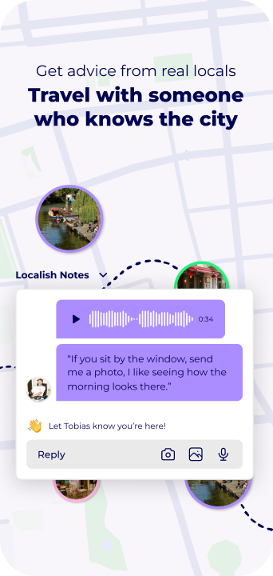
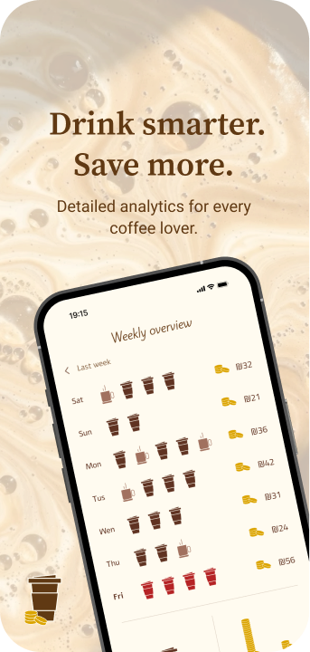

Product designer
Hey, I am Tala a visual Communication designer specializing in UI/UX.
Passionate about creating clean, user centric interfaces
and exploring the evolution of visual language.
Available for work
Tala.Mustafa
Selected projects2025–2026
Al Mansub
An interactive website tracing the evolution of the proportional Arabic script through a comparison of styles, historical artifacts, and formal principles.
2026Solo project

Localish
The app offers a connection to the city through what already feels like home, identifying patterns of taste, rhythm and character, and translating them to parallel places in a foreign city.
Connecting tourists and locals through personalization and experiences that feel real.
2026Team project



CoffeTrack
An app will help people quickly see if they can afford an extra coffee in the day and find the best place to buy it on the go, while staying within their budget and caffeine limits.
2025Solo project



About
I focus on creating clear, thoughtful, and visually engaging digital experiences that combine UI/UX, branding, and visual storytelling.
My work is driven by research, clarity, and a strong attention to detail, with an interest in how design shapes user behavior and emotional connection.
Skills
What I do
- UI/UX design
- Interaction design
- Design research
- Information architecture
- Prototyping
Tools
- Figma
- Adobe Illustrator
- Adobe Photoshop
- Claude
- Gemini
- ChatGPT
Languages
- Arabic Native
- Hebrew Fluent
- English Fluent